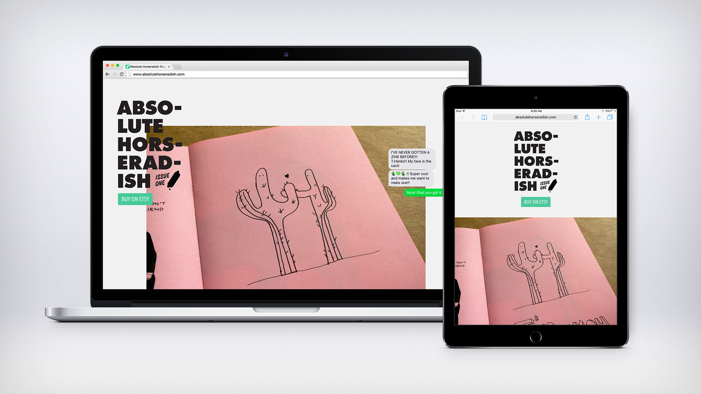
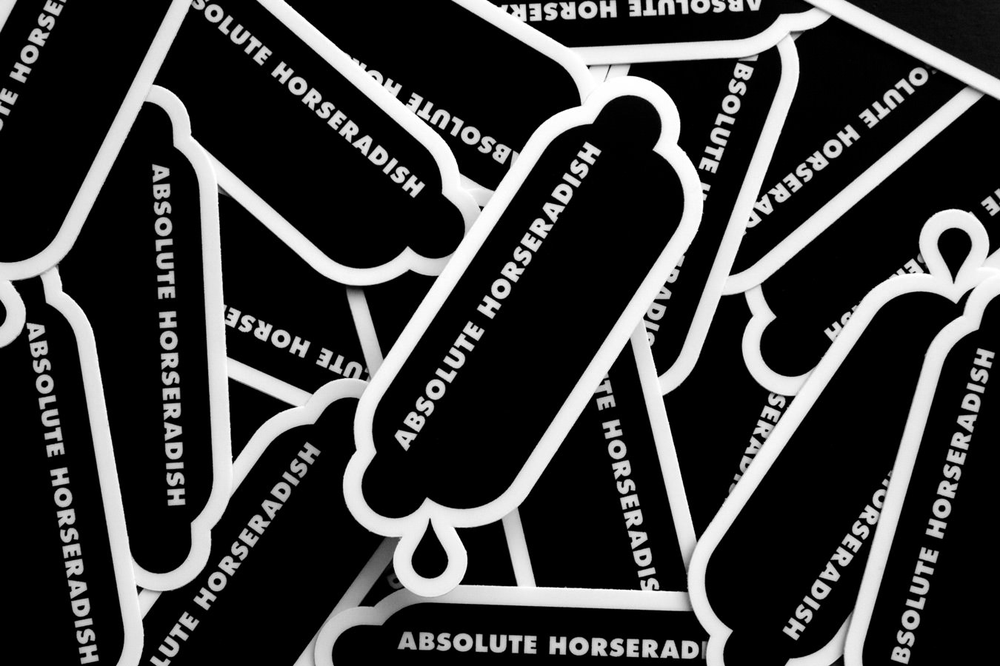
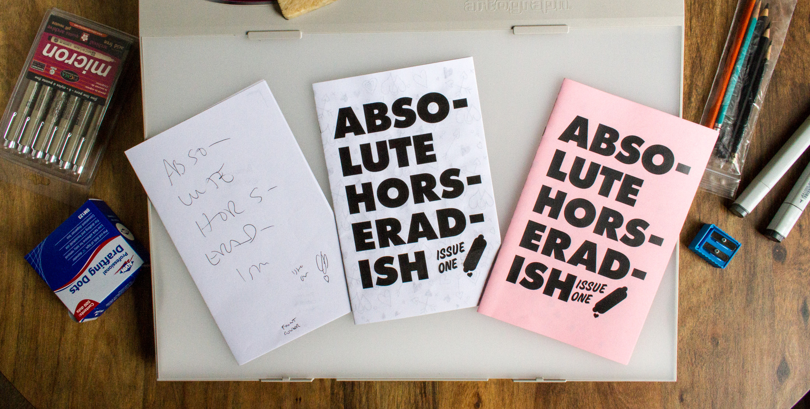

Absolute Horseradish
Website, Zine


Absolute Horseradish has absolutely nothing to do with horseradish.
My wife and I are both professional designers. She specializes in print design while my expertise is digital. We decided that the most logical way for us to combine our skill sets other than dinner parties and cleaning our shared spaces was to make a zine. I created the first iteration of Absolute Horseradish in undergrad with my good friend Rowan during the days when free Angelfire websites were rampant. It was designed in Microsoft Word, using fonts that looked like variations on fast food restaurant logos. While Holly and I did want to polish up the details from that maiden voyage, we wanted the same carefree spirit to remain. The output from that creative experiment is the zine you see before you. Fun. Weird. Unpredictable. Most importantly, we made it together (we didn’t even fight over any of the details).
Classification
Website and Zine
Typefaces
Futura Std. Extra Bold, Avenir Next Condensed, Courier Regular, Bemio Italic, House Industries - Movements, Sign, Hand Lettering
Production
Drawing -> Xerox -> Saddle Stitch Binding
Fun Facts
First Edition, 12 Pages, Hand Signed and Editioned
Size
Website - Responsive, Zine - Half-Letter Folded
Featured
For Print Only
URL
www.absolutehorseradish.com
Purchase
Zines from Etsy
